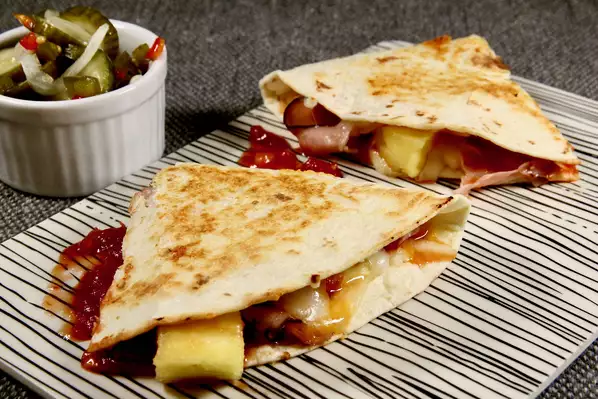

hawaiian Style Quesadillas

Description
Not your regular chipotle quesadillas
Ingredients
- 10 Flour Tortillas
- 1 1/2 pounds sliced ham
- 3 (8 ounce) packages shredded mozzarella and Cheddar cheese blend
- 1 (8 ounce) jar salsa
- 1 (15 ounce) can pineapple chunks, drained
- 1 (8 ounce) carton sour cream
Steps
- Heat a griddle over medium-high heat. Toast one side of a tortilla, 1 to 2 minutes. Lay 2 to 3 slices of ham on the other side of the griddle to heat through. Flip toasted tortilla over, sprinkle with mozzarella and Cheddar cheese blend, layer with hot ham, spread with desired amount of salsa, sprinkle with desired amount of pineapple, and fold tortilla in half.
- Turn quesadilla over and continue to cook until cheese is melted and tortilla has reached desired crispness, 2 to 4 minutes. Cut into wedges with a pizza cutter. Repeat with remaining ingredients. Serve with sour cream.